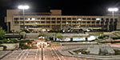
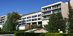

Американски университет в България
Американският университет в България е частен университет, разположен в Благоевград. АУБ следва традиционния американски модел на образование на свободните изкуства, характеризиращ се със съвместно съжителство на студентите в модерен университетски комплекс и с високи критерии за прием...
повече информация
Югозападен университет „Неофит Рилски”
Югозападен университет „Неофит Рилски” в Благоевград е открит през 1976 като филиал на СУ „Св. Климент Охридски". От 4 август 1983 става самостоятелен със специалности: педагогика на обучението по техника и технология, електроника и автоматика, инженерна екология, лека и хранителнапромишленост, фермерство, биомеханика, артехника, автомобилен транспорт, география...
повече информация